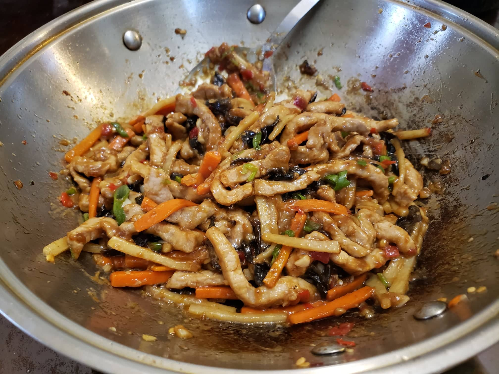

Yu Xiang Rou Si (Sichuan Shredded Pork with Garlic Sauce)

Ingredients:
Marinade:
- 1 lb Pork, tenderloin preferred, sliced into long strips
- 2 tsp Shaoxing wine
- 2 tsp Light soy sauce
- 3 tsp Water
- 1/8 tsp Salt
- 1 tsp Cornstarch
Sauce:
- 2 tbsp Sugar
- 2 tbsp Black rice vinegar
- 1 1/2 tbsp Cornstarch
- 1 1/2 tbsp Shaoxing wine
- 1 tbsp Light soy sauce
- 1/2 tbsp Dark soy sauce
Other Ingredients:
- 3 tbsp Canola oil
- 2 tbsp Pickled Sichuan chilli, minced
- 2 tsp Garlic, minced
- 1 tsp Ginger, minced
- 1/2 cup Wood ear mushroom, julienned, about 5 grams dried soaked in hot water for 10 minutes.
- 1/2 cup Bamboo shoots, julienned
- 1/2 cup Carrot, julienned
- 1-2 Scallion greens, finely chopped
Instructions:
- Place the pork, Shaoxing wine, light soy sauce, water, and salt into a container. Massage the marinade into the meat until no more liquid can be seens. Then massage in the cornstarch. Let marinate overnight.
- Mix the sauce ingredients into a bowl.
- Heat the canola oil in a wok over very high heat. Add in the marinated pork and stir fry until the meat becomes completely pale and is mostly cooked through. Remove the pork from the wok and reserve.
- Add in the pickled chilli, garlic, and ginger into the remaining oil. Stir fry for about 15-30 seconds or until fragrant. Then add in the mushrooms, carrots, and bamboo shoots. Stir fry for about 30-60 seconds.
- Add in the pork and stir fry for about 30 seconds. Slowly pour in the sauce while stirring and remove from heat once thick. Mix in scallion greens and serve.